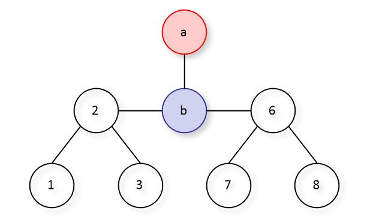

근성은 나무에 관심이 많다.
드루이드 근성은 트리를 관리하는 '산림의 수호자'이다. 근성이 관리하는 트리는 사이클이 없는 단순 연결 그래프 형태로 이루어져 있고, 얼마나 관리가 잘 됐는지 무려 $$$N$$$개나 되는 정점을 가지고 있다. 근성은 모든 정점을 소중하게 여겨서 $$$N$$$개의 정점들에 각각 $$$1$$$에서부터 $$$N$$$까지의 고유한 정점 번호를 일일히 매겨놓았다.
어느 날, 근성의 멋진 트리를 항상 시기해 오던 사악한 악당 영도가 근성의 트리에 불을 지르고 말았다! 근성이 트리를 최대한 온전히 보존하기 위해선, 트리가 완전히 타서 없어지기 전에 트리의 각 정점에 저장된 데이터들을 최대한 많이 복제해야 한다.
근성은 불에 타지 않은 정점 위에서 다음 행동 중 하나를 선택하여 수행할 수 있다.
만약 근성이 이동하기 또는 기다리기를 선택했다면, 수행하는 시간 동안 간선을 따라 이웃한 정점들에 불이 옮겨붙는다. 다시 말해, 불에 타지 않은 정점 중 불타는 정점과 간선을 따라 이웃한 모든 정점에 불이 옮겨붙는다.
만약 근성이가 다음 행동으로 불타는 정점 위에 있게 된다면, 그 즉시 근성은 더 이상의 트리 보존 작업을 포기하고 트리에서 탈출할 것이다. 근성이가 정점에 도착함과 동시에 해당 정점으로 불이 옮겨붙는다면, 근성은 해당 정점에서 데이터를 복제할 수 없다.
당신이 해야 할 일은 근성이 탈출하기 전까지 데이터를 복제할 수 있는 bf{트리}의 정점 개수의 최댓값을 구하여 근성이에게 알려주는 것이다. 산림의 수호자 근성을 도와 사악한 악당 영도의 계획을 저지해 보자!
첫째 줄에 트리의 정점의 개수 $$$N$$$$$$(2 ≤ N ≤ 100000)$$$이 주어진다.
다음 $$$N-1$$$개의 줄에 트리의 간선 정보가 각 줄마다 두 정점의 번호 $$$u$$$, $$$v$$$로 공백으로 구분되어 주어지는데, 정점 $$$u$$$와 $$$v$$$ 사이에 간선이 존재함을 나타낸다.
그다음 줄에는 최초로 불타는 정점 $$$a$$$와 근성이 위치한 정점 $$$b$$$의 번호가 한 줄에 각각 공백으로 구분되어 주어진다.
가능한 모든 경우들 중 근성이 탈출하기 전까지 트리에서 데이터를 복제할 수 있는 최대 정점 개수를 출력한다.
81 22 32 45 44 67 66 85 4
3
1310 116 77 117 31 33 412 88 44 55 25 99 1313 7
5
31 22 31 3
1

다음 그림은 예제 입력 1에서 주어진 트리의 모습이다. 이 문제에서 '트리'란 사이클이 없는 단순 연결 그래프를 의미하며, 여기서 '사이클'이란 어느 한 정점에서 출발해 같은 정점을 두 번 이상 방문하지 않고 시작점으로 돌아올 수 있는 경로를 말한다. 주어진 예제 그림은 '사이클이 없는 단순 연결 그래프'의 모습을 만족하고 있다.
이 예제의 경우 근성이 복제할 수 있는 정점 데이터의 최대 개수는 3개이다. 근성이 가능한 최적의 행동 중 하나는, 기다리기를 사용하지 않고 4(b)-2-1로 이동하며 매 정점마다 복제하기를 사용하는 것이다.